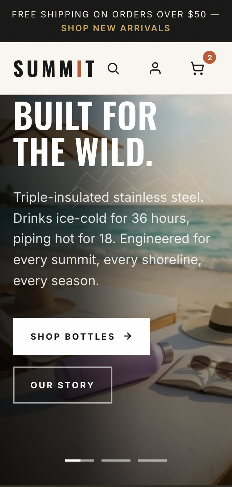
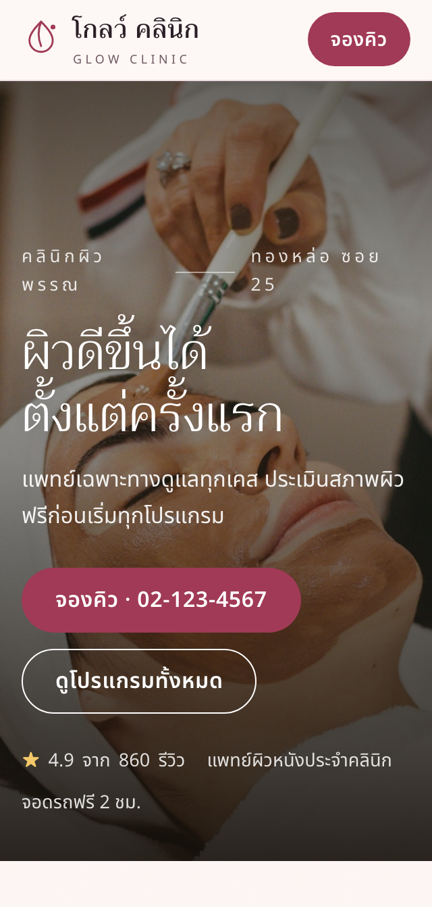
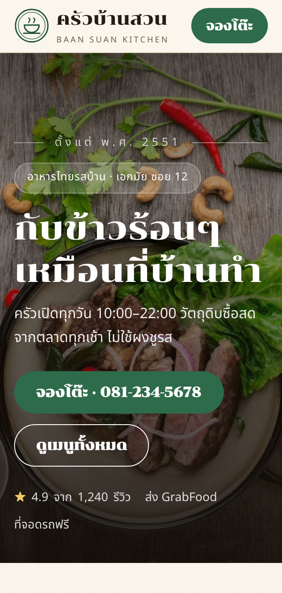
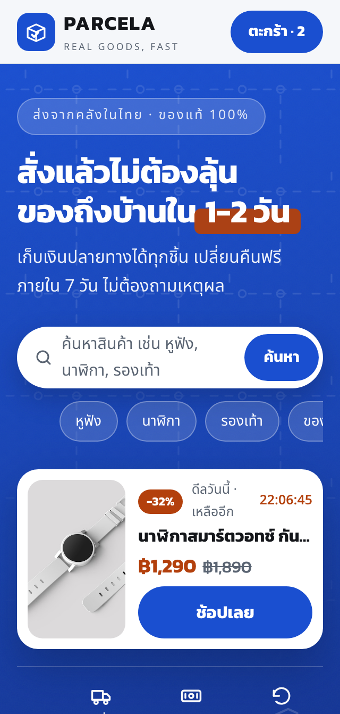
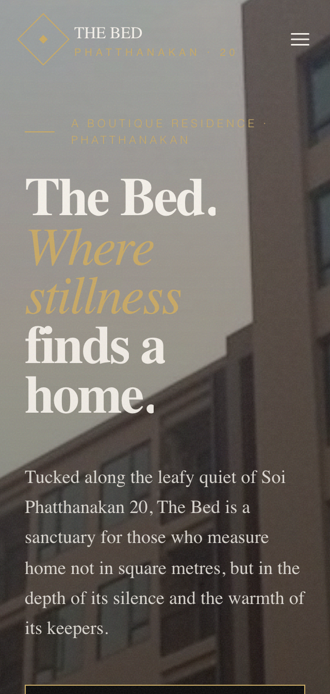

ตามสั่ง
WEB & APP STUDIO
เริ่มต้นที่
฿3,500
+
ประเมินราคาให้ฟรี ก่อนเริ่มงาน





รับทำเว็บไซต์ &
แอป
เดโมฟรีก่อนจ่าย
•
ไม่ต้องมัดจำ
•
ตอบกลับใน 1 วัน
สวยครบทุกจอ
โหลดไว ติดอันดับ Google
รับประกันงานเสีย 1–3 เดือน
ดูแลต่อหลังส่งงาน